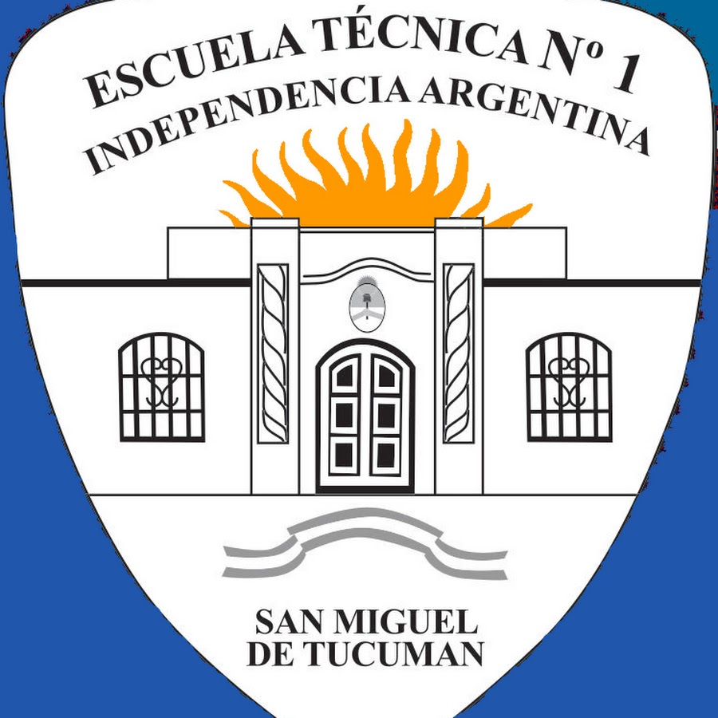
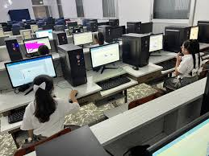

💡 Luces encendidas
Se dejan encendidas en aulas vacías.
Proyecto Escolar - Escuela Técnica
Comenzar
La energía eléctrica es fundamental en una Escuela Técnica, ya que se utiliza diariamente en computadoras, proyectores, talleres y laboratorios.
El uso responsable de la energía ayuda a reducir costos y cuidar el medio ambiente.

Muchas veces se dejan luces, computadoras y equipos encendidos sin necesidad.
Se dejan encendidas en aulas vacías.
Computadoras encendidas sin necesidad.
Cargadores enchufados consumiendo energía.
Cuando el aula esté vacía o haya luz natural.
Mantener cortinas abiertas durante el día.
Evitar consumo innecesario de energía.
Apagar todo al finalizar actividades.